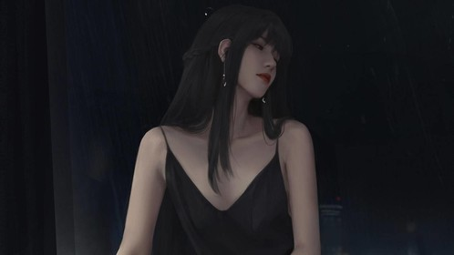
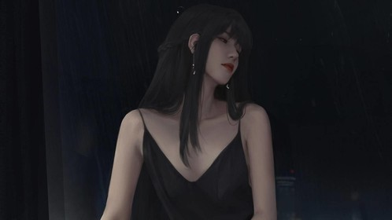

作者:半佛仙人
由于社交网络和智能推送的发展，在这个信息爆炸的年代，反而让人变得更加闭塞，而且每个人都在变得更加极端，人与人间的包容性正在变得越来越差。 互联网巨头近乎（只是近乎，不是绝对）掌握了控制人心的能力。
因为你所接触的一切网站和APP，都会在后台埋点计算你的行为，描画你的性格，捕捉你的需求，然后精准推送，满足你的需求。 从今日头条，到UC，到各种新闻APP，甚至知乎，都有着精密的喜好算法，全天在向你推送你感兴趣的内容，号称千人千面精准推送，实则让人只能活在自己喜好的世界里，因为只会给你推送你乐意点开的内容，毕竟推送机构自己都有阅读量KPI。 长此以往，每个人都会只活在自己的世界里，并且以为自己看到的就是整个世界。 知乎上多数年轻人都受过比较良好的教育，向往或者生存在北上广深，希望或者正在互联网or金融领域工作，考虑买房或背负房贷。 所以你们日常的关注点自然就在北上广深的生活，在金融工作和互联网工作，在超一线城市的房价，如何成为男神女神，情感撕逼，所以你们接收到的推送信息往往都只是相关信息，所以你才会有现在中国房价上天，金融互联网高大上，身边都是三观不正的人，自己长相中上其实是女神的错觉，并且没有人能告诉你你是错的，因为为了引起的你注意，所有的信息都会按照你的喜好的推。 你是皇帝，但确是一个无法接收到真正信息，只能看大臣奏折的皇帝。
你喜欢看情感撕逼，就会一直给你推情感撕逼，你就会觉得这个世界就是这样的，每个人都靠不住，渣男绿茶天天都是； 你喜欢同性恋，就会一直给你推同性恋，你就会觉得这个世界对于同性恋特别包含，大家都特别开明，同性恋就是正义； 你喜欢看屌丝逆袭，就会一直给你推毒鸡汤，你就会认为这个世界只要努力就没有办不成的事情。 你喜欢看国富民强，就一直给你推什么虽远必诛，你就会认为我国已经成为世界第一强国，一切事情背后都有一步大棋。 哪怕你喜欢群P，喜欢SM，喜欢各种小众文化，喜欢各种反大众常规道德的东西，也会一直给你推送相关资讯，让你时刻认为自己已在主流圈里吾道不孤。 等等等等无数案例。
你喜欢，你觉得，你认为，你见到的，就是整个世界。 很可惜，不是。为什么每到过年回老家的时候，大家的三观都要被撞一次腰，然后上知乎疯狂提问吐槽求解求同类？为什么知乎上这么多与三观崩塌有关的问题？
因为当你强制脱离当前环境的时候，你就会发现，这个世界与你看到的不一样，你认为理所应当的东西，在别人看来就是傻逼，对此你束手无策。 同一个道理，为什么在知乎里的每一个问题讨论下，都会出现那种你完全无法了解无法认可并且激烈反驳的回答？而且还有很多赞？你觉得不可思议？ 因为每个人的成长环境和生存环境都不一样，所以接收到的信息不一样。
为什么这么多【何不食肉糜】的问题与回答？你是不是觉得对方是傻逼？ 对方不是傻，只是看不到你看到的东西。 想想吧。
如果你还是单纯认为自己看到的片面的推送的信息就是整个世界，那么这样恶性循环下去，多数情况你会彻底成为一个极端的人并且乐此不疲，因为你看到的一切都是满足你极端的需求，你看不到反对意见，最终你成为了你自己脑放的国王。 但你的王国非常脆弱，你的王位岌岌可危，因为你的一切，都经不起观点碰撞。 所以在每一次观点碰撞中，你愤怒又惶恐，惶恐又导致更大的愤怒，所以你愈加极端，你愈加容不下异端。 你以为你代表了主流，实际上在主流眼里你可能是盲流，甚至在其他人眼里你是下九流。
大家一定要警惕，这个看似因为互联网发展已经联通的世界，实际上正在快速分裂成一个个小世界，而这些世界的边界，不在地域上，而在脑子里。 你看到的，只是你潜意识里想看到的。
所谓独立思考，就是让你跳出自己思维边界，俯瞰整个世界。 虽然这个世界可能并不好看。 
